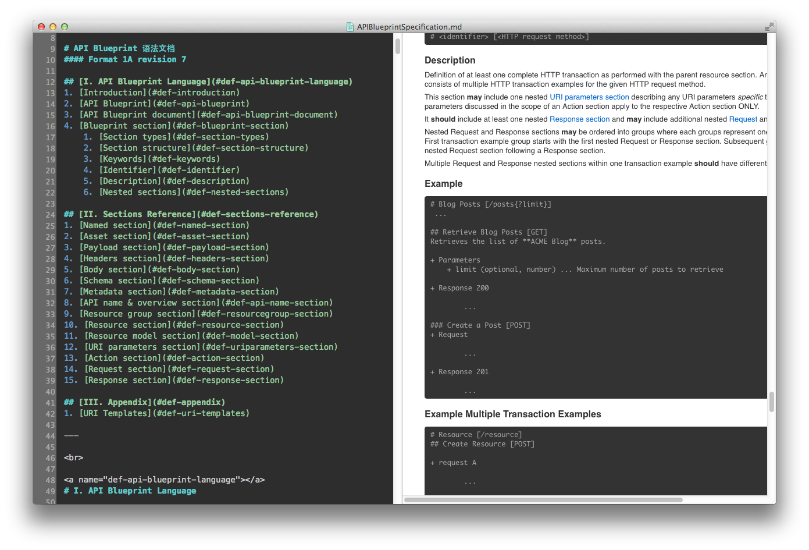
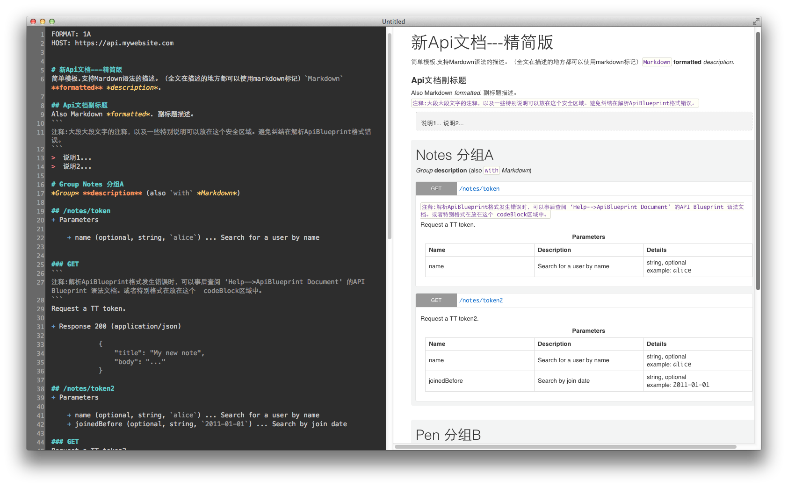
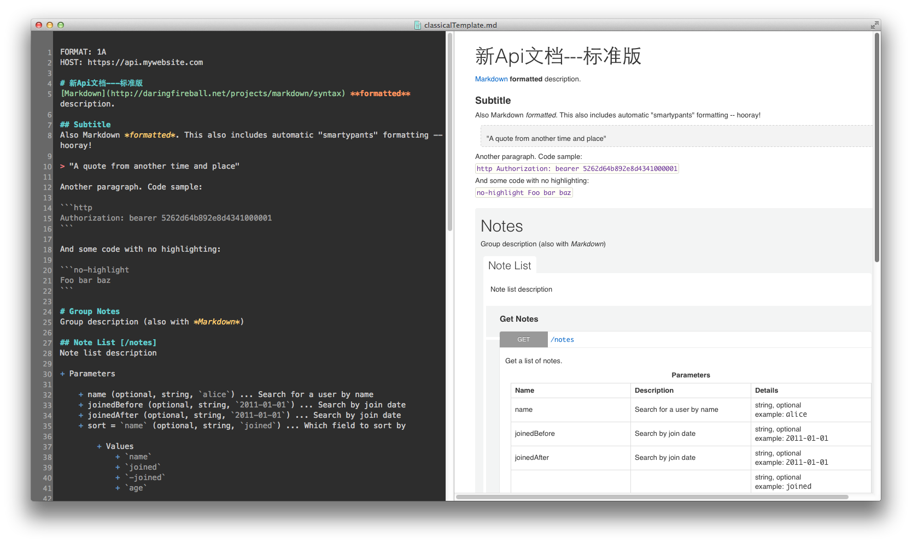

ApiBlueprint is ?
ApiBlueprint is ApiBlueprint.ApiBlueprint，可以认为是一份标准的“Api文档格式语言”。它由ApiBlueprint.org(Apiary.io)起草并维护。
在“Api文档格式语言”这块新规范上，有着共同心愿的还有mulesoft起草并维护的raml.org API-NoteBook。RAML是“RESTful API Modeling Language”的缩写。
ApiBlueprint和RAML的提出。一如既往地体现了开放软件工程的魅力，当工程发展面临沉闷的问题时，开放工程总能有创见性地提出一个有着精致理论的应对方案。
它们都指明了下一代API的规范文档方向。那就是，API in Language。即是，让Api在简明规范中更好地流通使用起来。
为什么选择ApiBlueprint ？
分成两个部分来判断。首先是，ApiBlueprint相比于传统Api手写文档方式(word文档，txt文档)，和自动生成web文档方式(Swagger、dexy框架等)都有着版本级别的优越性。具体为，
- Api规范更自由&合理。手写的文档受制于项目经理或技术经理的个人经验的“垄断”。
- Api文档建立更易上手。不需要像自动生成web文档，需要run几条command，搭配个基本环境。
然后是，ApiBlueprint相比于同类规范，诸如RAML等，优势则是，
- 比RAML更有活力。这也是因为RAML屈身于大型软件厂商旗下，RAML的自我纠正和自我更新的速度就远不如Apiary.io这类创业公司手中的ApiBlueprint。
- 比RAML更简洁。因为程序猿的惯性行为肯定会是逐步最小化使用，所以ApiBlueprint相对来说更精简直白的表达方式，也会让API文档长久被维护起来。
ApiBlueprint 格式文档
建议快速浏览文档目录一次，以后需要的时候，再回来查阅。

为什么有ApiBlueprint.cn 和 ApiBox ?
ApiBlueprint和apiary.io做的都很出色，ApiBox和CN都是为了能让ApiBlueprint能够在中国更出色的传播收益起来。原因有三，
- 速度。天朝的墙太高了，使用webApp有不太多不畅快。
- 性能。apiary的web编辑板很出色，但是原生应用的迅捷一如既往是工程师的追求。
- 隐私。大型项目或者商业机密类API，对于隐私的要求极其苛刻，所以本地存储的apibox很有存在的必要。
简要模板 simpleTemplate

标准模板 classicalTemplate

参与建议&相关资源
ApiBlueprint支持开源性生长。欢迎一起issue讨论，或者pull request。